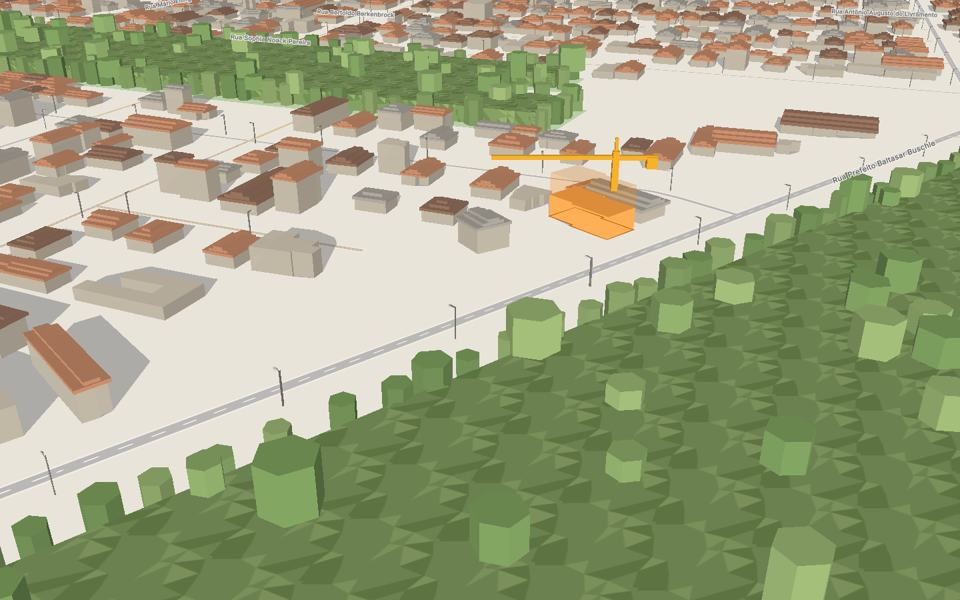
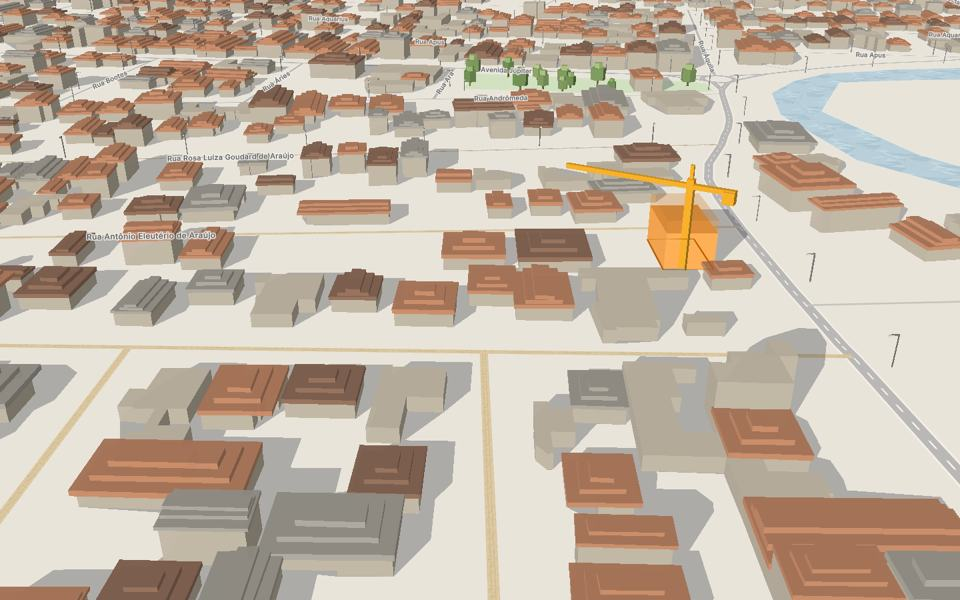
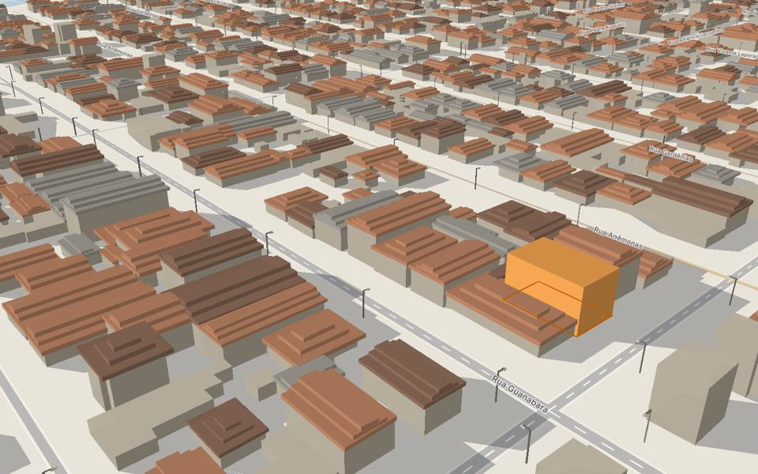

Três jeitos de o site ganhar vida.
Protótipos navegáveis que saíram do estudo de referências. Usam os imóveis de exemplo e o mapa 3D de verdade da plataforma. As imagens dos imóveis são o próprio mapa no fim da tarde; num site real, entram as fotos.
 Sugestão 1
Sugestão 1Cidade viva
O mapa 3D é a cara do site: abre na luz real de Joinville e gira devagar atrás da busca. Escuro, quente, com cara de fim de tarde.
- Mapa vivo no topo
- Menu em pílula
- Busca por frase com etiquetas
- Coleções por estilo de vida
- Desconto com gráfico
- Aviso de novidade

Sugestão 2Editorial
O site como uma revista sobre morar em Joinville: tipografia com serifa, imóvel da semana contado como matéria, guias de bairro e poucos imóveis escolhidos.
- Busca em forma de frase
- Formas orgânicas
- Faixa de bairros
- Imóvel da semana
- Guias de bairro
- Seções numeradas

Sugestão 3Transparência
Os números em primeiro lugar: quanto custa por mês com tudo somado, se cabe no bolso, o preço que caiu com data e a comparação lado a lado.
- Cabe no bolso?
- Custo do mês em barra
- Histórico de preço
- Comparar com destaque
- Cards que se reorganizam

Página do imóvelO imóvel, contado com o mapa
Serve para as três direções. Ao rolar, o mapa desce até o prédio, mostra o sol e a sombra de verdade, passeia pela rua e pelo bairro, e termina no preço e na visita.
- Voo até o prédio
- Sol e sombra ao vivo
- Passeio pelo bairro
- Gráfico do preço
- Decidir a dois
- Melhor horário de visita
Como ver melhor
- Use o Chrome ou o Edge no computador: as transições entre páginas (o card que cresce até virar a foto do imóvel) e as animações ligadas à rolagem aparecem ali. Nos outros navegadores, tudo funciona, só que sem esses efeitos.
- O mapa 3D carrega depois da página, por cima de uma imagem. No celular, a sugestão 1 fica só com a imagem para não pesar.
- Todas as páginas têm o botão "Pausar animações" e respeitam o "reduzir movimento" do sistema.
- O estudo completo está em
docs/estudo-design.mdedocs/estudo-design-referencias.md.